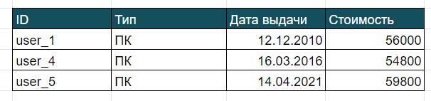

SQL.
В чём заключается работа с базой? В написании запросов — обращений к базе данных. Это возможно за счет языка SQL (Structured Query Language). Этот язык предназначен для описания, изменения и извлечения данных, хранимых в реляционных базах данных. Он не является языком программирования.
Основные функции, которые можно выполнять с помощью SQL, — создание таблиц, добавление записей в таблицу, изменение записей, удаление и самое популярное (для начинающего тестировщика) — выборка данных из таблиц.
SQL язык запросов к данным имеет несколько операторов, которые работают по определенной логике и в составе запроса могут предоставить пользователю необходимую ему информацию. Что касается выборки данных, конечно же, есть операторы, позволяющие создать, изменить или удалить запись в таблице. Вообще они делятся на несколько логически разделенных групп.
DDL (Data Definition Language) — язык определения данных. Эти операторы предназначены для создания, удаления, изменения объектов базы: таблиц, записей. Например, CREATE TABLE <имя> создает таблицу, DROP TABLE <имя> удаляет таблицу из базы данных.
DCL ( Data Control Language) — язык управления данными. Операторы этой группы предназначены для администрирования базы данных, в частности, они выдают или наоборот отменяют права доступа к базе. Например, GRANT выдаёт права пользователю для взаимодействия с данными из базы. REVOKE отменяет какую-либо привилегию у пользователя (примеры операторов берутся для Оracle db, для других СУБД операторы могут отличаться).
DML (Data Manipulation Language) — язык обработки данных, эта часть и будет интересовать нас больше всего. Эти операторы предназначены для любых манипуляций с данными базы: выбора данных (SELECT), изменения значений для каких-либо полей в записи (UPDATE), добавления новых записей в таблицу (INSERT) и удаления строк(DELETE).
Самый часто используемый оператор — SELECT. С помощью него можно доставать любые данные из таблицы, задав условия, по которым система найдет и отфильтрует данные. Общее правило записи запроса SELECT выглядит так:
SELECT [ALL/DISTINCT] <список атрибутов>/*
FROM <список таблиц>
[WHERE <условие выборки>]
[ORDER BY <список атрибутов>]
[GROUP BY <список атрибутов>]
[HAVING <условие>]
[UNION<выражение с оператором SELECT>]
Давайте разбирать по порядку: SELECT всегда идет первым, он как бы говорит системе, что надо сделать: “выбери мне кое-что...”.
В квадратных скобках — необязательные операторы, т. е. вы можете не использовать их в своём запросе, но знать о них должны. ALL говорит, что выбрать нужно всё, что подойдёт под условия, указанные дальше. DISTINCT же наоборот сообщает системе, что выдать пользователю нужно только уникальные записи. Почему это нужно? В базах часто бывает, что записи дублируются, и выводить их все иногда не имеет смысла. Например, в нашей таблице “Техника” есть несколько записей для одного и того же сотрудника, т. е. одному человеку выдано несколько единиц техники, и в запросе, который покажет, скольким людям в компании выдана казённая техника, нам не нужно выводить все строки с одинаковым ID. Кстати, оператор ALL по умолчанию вшит в запрос. Это значит, что если вы не указываете DISTINCT и явно не пишите ALL, система будет считать, что вывести нужно все записи.
Давайте начнём составлять наш запрос, отображающий людей, которые имеют технику от компании. Указываем ключевое слово Select и distinct, чтобы не дублировать людей, у которых больше единицы техники
SELECT DISTINCT
Далее указываем в запросе список атрибутов, т. е. список тех полей из таблицы, которые вам нужны. Их можно указать явно, прописав название каждого поля через запятую, или для красоты и ясности вы можете их переименовать в выводе, для чего вы переименовываете их не в самой таблице, а только для вывода. Для начала работы с SQL можно на этом не заморачиваться, хотя я всё же считаю, что учиться лучше сразу.
SELECT DISTINCT ID as Идентификатор_сотрудника
Оператор AS как раз указывает на переименование, т. е. читаем запрос так: “выведи мне все уникальные идентификаторы сотрудника”, и название столбца, который выведен, будет Идентификатор_сотрудника, а не ID.
Далее важно не забыть указать, откуда нам взять данные. Это работа для оператора FROM, и мы пишем название таблицы или нескольких таблиц. Есть нюанс — когда используем несколько таблиц, запрос не сработает, если их просто перечислить.
SELECT DISTINCT ID as Идентификатор_сотрудника FROM Техника
Вот что получим при таком запросе:
Видим, что вывод содержит пять строк, пять уникальных сотрудников, а не все семь строк, что были записаны в таблицу “Техника”.
Вместо перечисления столбцов можно использовать * (звездочку), тогда запрос выведет все поля таблицы. Такой самый простой запрос можно делать для того, чтобы ознакомиться с таблицей, посмотреть, что за поля там есть, и уже потом углубиться и написать более узкий запрос.
SELECT * FROM Техника
Разобранные нами запросы имеют место быть, но работа с базой с помощью SQL для того-то и нужна, чтобы выбирать из таблицы конкретно то, что нужно пользователю. Для этого можно использовать оператор WHERE, указывающий условия, по которым нужно отобрать данные из базы. Например, нам нужно отобрать сотрудников, которым выдан ПК. Пишем запрос с условием, где в колонке Тип указано “ПК”. Как это условие перенести на SQL:
SELECT DISTINCT ID as Идентификатор_сотрудника FROM Техника WHERE Тип = "ПК"
Пишем оператор WHERE, а дальше непосредственно условие, по которому отфильтруем записи, т. е. указываем название атрибута (название столбца таблицы), ставим знак равно, который проверит, точно ли такое значение имеет поле. И пишем то значение, которое нам необходимо — ПК, чтобы отбрать всех, кому выдан ПК. Почему берём в кавычки? Мы говорили ранее про типы данных, и такой атрибут имеет тип Строка. Это всё, что мы пишем словами, аббревиатурами и тому подобное, а строку надо заключать в кавычки, чтобы система понимала, что это строка. Вывод на такой запрос будет выглядеть так:
Как вы понимаете, условие может быть любым, необязательно указывать точное совпадение по значению. Тут можно использовать различные логические операции, такие как AND (И), OR (ИЛИ), NOT (НЕ) , IN (входит в), BETWEEN (между), LIKE (похожий), NOT NULL (не пустой), операторы Больше, Меньше (<, ≤, >,≥). Их функцию можно понять по названию. Давайте разберём на примерах: используя операторы AND и OR, выведем id сотрудников, которым выданы ПК или ноутбук, стоимостью свыше 50 000.
SELECT ID as Идентификатор_сотрудника FROM Техника
WHERE Тип = "ПК" OR Тип = "Ноутбук"
AND Стоимость >= 50 000

Оператор IN отфильтрует те записи, у которых значения необходимых полей находятся в каком-то списке значений. Например, Тип IN (“ПК”, “Ноутбук”), BETWEEN можно использовать, чтобы отбирать значения поля, находящегося в каком-то интервале. LIKE отберёт записи со значениями в поле, похожем на какое-то значение. Например, вы точно не знаете, как записано ФИО сотрудника: имя полностью или нет, инициалы, с отчеством или нет. И вам надо отобрать сотрудников по фамилии Иванов. Вот дана таблица сотрудников:
Напишем запрос для отбора всех Ивановых:
SELECT * FROM Сотрудники WHERE ФИО LIKE “Иванов %”
После слова LIKE идёт выражение, которое вычислит нужную нам строку, оно записывается в кавычках. Внутри пишем паттерн (шаблон) для отбора строки. Мы сразу пишем Иванов, т. к. с фамилии начинаются все записи в таблице. Чтобы исключить Иванову (женский род), нам нужно показать в запросе, что фамилия строго заканчивается на букву В, и нет никакого больше окончания. Для этого после “Иванов” ставим пробел, а после пробела — знак процента %. Он указывает на любое количество любых символов, нас не интересует Петр или Анатолий этот Иванов, и не интересует, как именно написано в таблице его имя и отчество.
Оператор ORDER BY позволяет вывести данные в упорядоченном виде, например в алфавитном порядке. У него есть вспомогательные операторы ASC и DESC, они указывают порядок вывода от меньшего к большему и наоборот, соответственно. Первый оператор при ORDER BY зашит по умолчанию. Например, мы хотим вывести всех сотрудников по возрасту от самого старшего до самого молодого:
SELECT * FROM Сотрудники ORDER BY Дата рождения DESC
Помимо указания столбца в операторе ORDER BY можно указывать различные выражения, но это уже совсем непростой уровень, вы сможете этому научиться, если будете продолжать изучать SQL.
GROUP BY позволит вам сгруппировать записи таблицы по определённому полю с одинаковым значением и вывести информацию. Например, хотим узнать скольким сотрудникам выданы ПК, ноутбуки, мониторы и телефоны, для чего группируем записи в таблице “Техника” по полю Тип. GROUP BY используется с агрегированными функциями, такими как COUNT() — количество, SUM() — сумма, MIN() — минимум, MAX() — максимум, AVG() — среднее.
SELECT COUNT(ID), Тип FROM Техника GROUP BY Тип
А оператор HAVING отберёт вам полученные группы по определённому принципу, т. е. он работает так же, как и WHERE, только отбирает группы, а не строки. На собеседованиях любят задавать вопрос: какой оператор используется с GROUP BY? Так вот, запомните, что HAVING всегда идет с GROUP BY.
Данные можно выбирать не только из одной таблицы, можно запрашивать из разных. Это позволяет делать оператор JOIN. Новичкам нужно быть знакомым с этим оператором. Давайте с примером: выведем ФИО сотрудников, которым выдана техника и тип этой техники. ФИО находится в таблице Сотрудники, а тип техники находится в таблице Техника.
SELECT ФИО, Тип
FROM Сотрудники JOIN Техника
ON Сотрудники.Сотрудник-ID = Техника.ID
Первая строка — выбираем столбец ФИО и ТИП, вторая строка — указываем, откуда выбираем строки: из таблицы Сотрудники и Техника с помощью оператора JOIN. Но не всё так просто: система должна понять, как ей соединить строку из первой таблицы со строкой из второй таблицы. Тут используем условие, по которому будем соединять строки. Пишется оно после ON, указываем название таблицы и через точку поле из этой таблицы. Помните, мы говорили про ключи? Вот как раз они и помогают соединять строки. Сотрудник-ID — первичный ключ из первой таблицы, его копия — внешний ключ, столбец ID во второй таблице, они должны совпадать.
Обратите внимание: в первой таблице 6 строк, во второй 4, в ответе выведено только 4 строки. Это потому, что мы использовали в запросе внутреннее пересечение таблиц, т. е. выбирали только те строки, ключ которых есть и в первой, и во второй таблице. Внутреннее пересечение называется INNER JOIN, и оно всегда работает по умолчанию, если будем писать просто JOIN. Но есть и другие функции для JOIN, чтобы лучше их понять можно наглядно посмотреть на диаграммы с кругами:

Например, давайте попробуем с RIGHT JOIN:
SELECT ФИО, Тип
FROM Техника RIGHT JOIN Сотрудники
ON Сотрудники.Сотрудник-ID = Техника.ID
В вывод добавляются две строки из правой таблицы запроса (Сотрудники), в колонке ФИО выводятся их ФИО, а в колонке Тип значения — NULL (пусто). При таком JOIN в вывод дописываются строки со значениями из правой таблицы, и NULL-ы для строк левой таблицы, к которым не нашлась пара.
Есть ещё некоторые другие операторы SQL, но их мы рассматривать в рамках этого урока не будем. Для знакомства и начального уровня достаточно усвоить тот материал, который я изложила выше. Но, конечно, в дальнейшем в своей работе вы сможете легко освоить и все остальные операторы языка SQL.